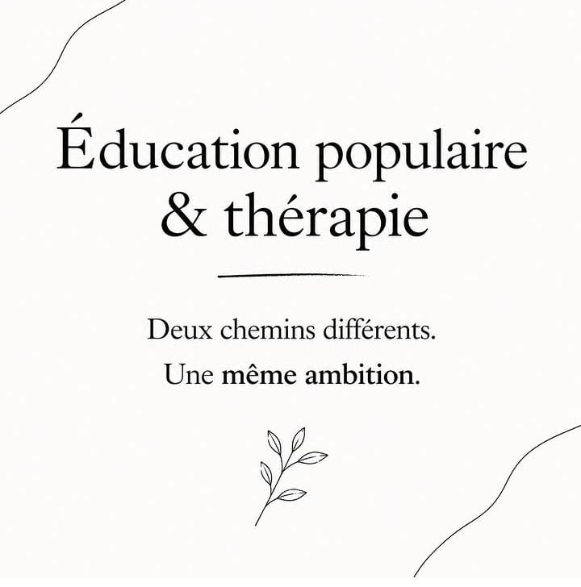
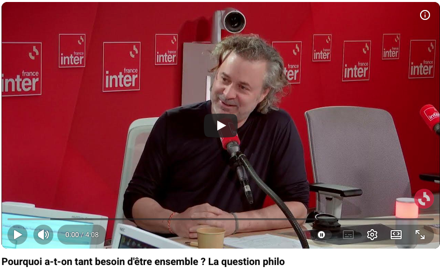

Pouvoir d’agir & société
Psycho-praticienne, neutre ? Vraiment ?
Une réflexion sur la neutralité thérapeutique, les limites du non-jugement, l’esprit critique et la place citoyenne.
Lire l’article →Explorer par thématique
Une réflexion sur la neutralité thérapeutique, les limites du non-jugement, l’esprit critique et la place citoyenne.
Lire l’article →
Deux chemins différents pour soutenir l’autonomie, les ressources et la capacité de chacun à participer pleinement à sa propre vie.
Lire l’article →
Une lecture gestaltiste du lien, de la polarisation et de la responsabilité relationnelle.
Lire l’article →